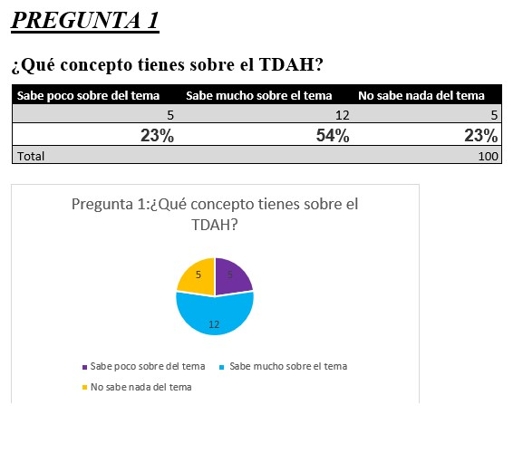
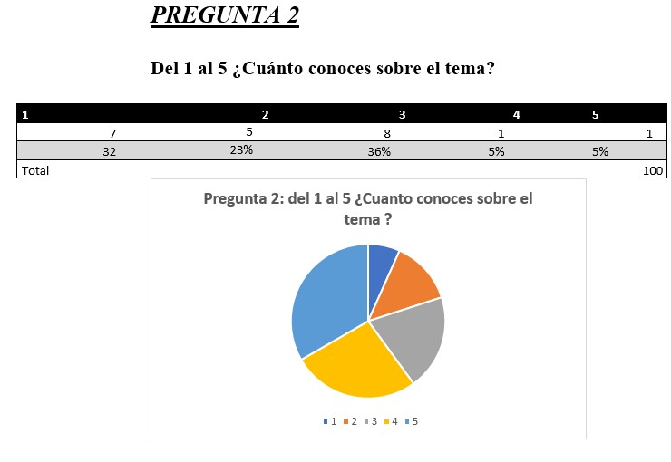
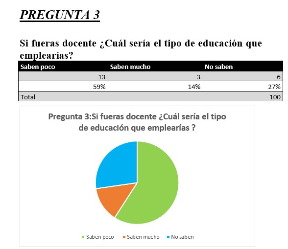
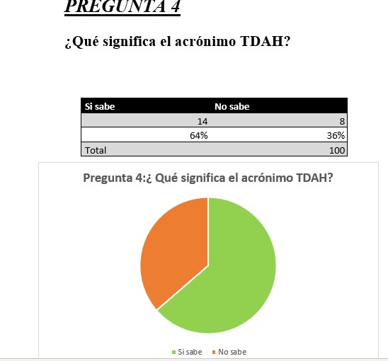
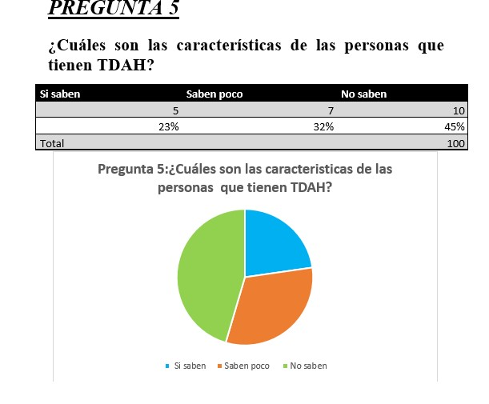

PROYECTO DE INVESTIGACIÓN SOBRE EL TDAH
Nosotros
- Hinostroza Pillaca Adriana Camila
- Cabrera Taipe Gimena Dayle
- Navarro Zambrano Marcela Paz
- Quispe Llimpe Xiomara Jasmin
- Mitma Arcos Celeste Maria Fernanda
- Cerdan Quispe Flavio Cesar
- Manrique Chanhualla Wilber Josue
Proyecto
¿Que es?
El TDAH es un trastorno del neurodesarrollo. Por lo general, se diagnostica por primera vez en la infancia y, a menudo, dura hasta la edad adulta. Sin embargo, a algunas personas no se les diagnostica el trastorno hasta que son adultas. El TDAH implica:
- problemas para prestar atención (falta de atención)
- Tener problemas para controlar conductas impulsivas (impulsividad)
- Ser demasiado activo (hiperactividad)
Tipos de TDAH
- Predominantemente inatento: Las personas con este tipo de TDAH tienen problemas para prestar atención y se distraen con facilidad. Les cuesta organizarse o terminar las tareas. Pueden tener problemas para seguir instrucciones o conversaciones
- TDAH predominantemente hiperactivo e impulsivo: Las personas con este tipo de TDAH tienen síntomas tanto de hiperactividad como de impulsividad:
- Con hiperactividad: Las personas sienten la necesidad de estar siempre en movimiento. Tienen problemas para quedarse quietas y pueden ser inquietas y/o hablar demasiado
- Con impulsividad: Las personas tienen problemas para controlar sus acciones y palabras. Tienden a actuar sobre ideas o sentimientos repentinos sin pensar en las posibles consecuencias. Pueden interrumpir mucho a los demás o tener problemas para esperar su turno
- TDAH combinado: Las personas con este tipo de TDAH tienen una combinación de síntomas de falta de atención e hiperactividad-impulsividad. El TDAH combinado es el más común
¿Porque se produce?
Desconoce la causa exacta del TDAH. Probablemente es el resultado de una combinación de factores, como la genética y el entorno. Los investigadores están analizando posibles factores ambientales que podrían aumentar el riesgo de tener TDAH. Estos factores incluyen lesiones cerebrales, nutrición y entornos sociales
Sìntomas
- Inquietos y moverse al estar sentados
- Pararse cuando deben permanecer sentados, como en la escuela o el trabajo
- Correr o trepar cuando no es apropiado (niños) o estar inquietos (adolescentes y adultos)
- Tener problemas para realizar actividades tranquilas
- Estar en constante movimiento
- Hablar mucho más de lo normal
- Dar respuestas bruscas antes de que se completen las preguntas
- Tener problemas para esperar su turno
- Interrumpir a los demás, como durante conversaciones o juegos
.jpg)
Objetivos generales
Impacto de TDAH
Objetivos especificos
Impacto de TDAH en la ciudad de Ayacucho
Importancia
La salud mental es un derecho que todas las personas tenemos, razón por la cual hoy en día se habla mucho del TDAH, que debemos dejar en claro que no es una enfermedad; sino una condición de quienes la padecen. Por ello es importante saber y conocer las causas (neurológicas o hereditarias), como se manifiesta y como saber manejar de manera equilibrada tal condición.
Justificacion
A través del presente trabajo de Investigación, vamos a conocer en que consiste el Trastorno de Déficit de Atención e Hiperactividad (TDAH), las personas que la padecen y como la sociedad reacciona frente a esta condición.
Marco teorico
Antecendentes
El médico alemán Melchior Adam Weikard, fue uno de los autores que hizo referencia al TDAH en un artículo sobre trastornos de la atención, cuya fecha data del año 1775, según este autor, de cuyo libro Der Philosophische Artz la primera descripción médica del TDAH es conocida hasta el momento.
Según Weikard, las personas carentes de atención se caracterizaban por ser imprudentes, descuidados, caprichosos y desenfrenados, tenían conocimientos superficiales, dejaban las cosas a medias y realizaban las tareas de forma desorganizada, puesto que no dedicaban el tiempo y la paciencia suficiente para alcanzar las habilidades necesarias. Además, carecían de rigor, corrección y exactitud y eran inconstantes. También hizo descripciones de algunos tratamientos que coinciden con alguna de las recomendaciones actuales, como la práctica de ejercicio y la reducción de estímulos.
Unos años más tarde, en 1798, el médico Alexander Crichton describe un cuadro clínico que incluye las principales características de lo que hoy llamamos TDAH con presentación predominante de déficit de atención (mental restlessness), en el que hace referencia a la incapacidad de mantener la atención con el grado necesario de constancia, dando una imagen de inquietud. Este trastorno, según Crichton, podía estar presente en el nacimiento de la persona o desarrollarse a partir de un accidente. Por otro lado, pensaba que este trastorno se detectaba a una edad temprana y que se resolvía antes de llegar a la edad adulta.
Aunque bajo una presentación literaria y no médica, el psiquiatra Heinrich Hoffman publicó en el año 1845 un libro de poemas infantiles en el que describía dos casos de TDAH. Entre su contenido, La historia del inquieto Philip mostraba a un niño que no podía mantenerse quieto en la mesa a pesar de las advertencias de su padre. Algunas de las cualidades que se veían reflejadas en su obra eran la inatención y la hiperactividad prolongadas durante el tiempo. Las descripciones coincidían con algunas de las características propias del concepto de TDAH actual.
Actualmente, se considera que el TDAH es un trastorno del neurodesarrollo complejo, heterogéneo y multifactorial que se inicia en la infancia o en la adolescencia y que puede continuar durante la vida adulta, que se caracteriza por la presencia de síntomas persistentes de inatención, de hiperactividad y de impulsividad.
Définicion de terminos básicos
a.1 Trastorno: Los trastornos emocionales son patrones de pensamiento y de conducta que alteran el funcionamiento de una persona y su equilibrio psicológico
b.2 Déficit: Incapacidad de identificar, reconocer, nombrar o describir las emociones o los sentimientos
c.3 Atención: La atención es el proceso por el cual podemos dirigir nuestros recursos mentales sobre algunos aspectos del medio, los más relevantes, o bien sobre la ejecución de determinadas acciones que consideramos más adecuadas entre las posibles.
d.4 Hiperactividad: Actividad constante, tendencia a distraerse fácilmente, impulsividad, incapacidad para concentrarse, agresividad, y comportamientos similares.
Hipotesis
Afecta el TDAH en las personas para que puedan relacionarse de manera adecuada tanto en lo social, familiar y educativo
Resultados de las encuestas





Conclusiones
- El TDAH no es una enfermedad es una condición
- Es un trastorno que afecta y produce dificultad en las relaciones inter personales.
- Provoca frustración e impulsividad
- Por desconocimiento son víctimas de violencia psicológica y física
- Hoy en día, existen altos índices de diagnóstico con esa condición
- El TDAH puede ser controlado con terapias, en algunos casos medicamentos y sobre todo mucho apoyo familiar y personas más cercanas